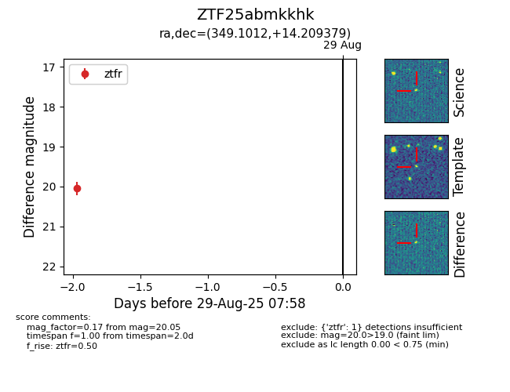

FINK: ZTF25abmkkhk
Lasair: ZTF25abmkkhk
ALeRCE: ZTF25abmkkhk
ZTF25abmkkhk (ztf,fink)
equatorial (ra, dec) = (349.1012,+14.20938)
galactic (l, b) = (90.8501,-42.66528)

last ztfg=18.27, ztfr=20.05
1 ztfg, 1 ztfr detections